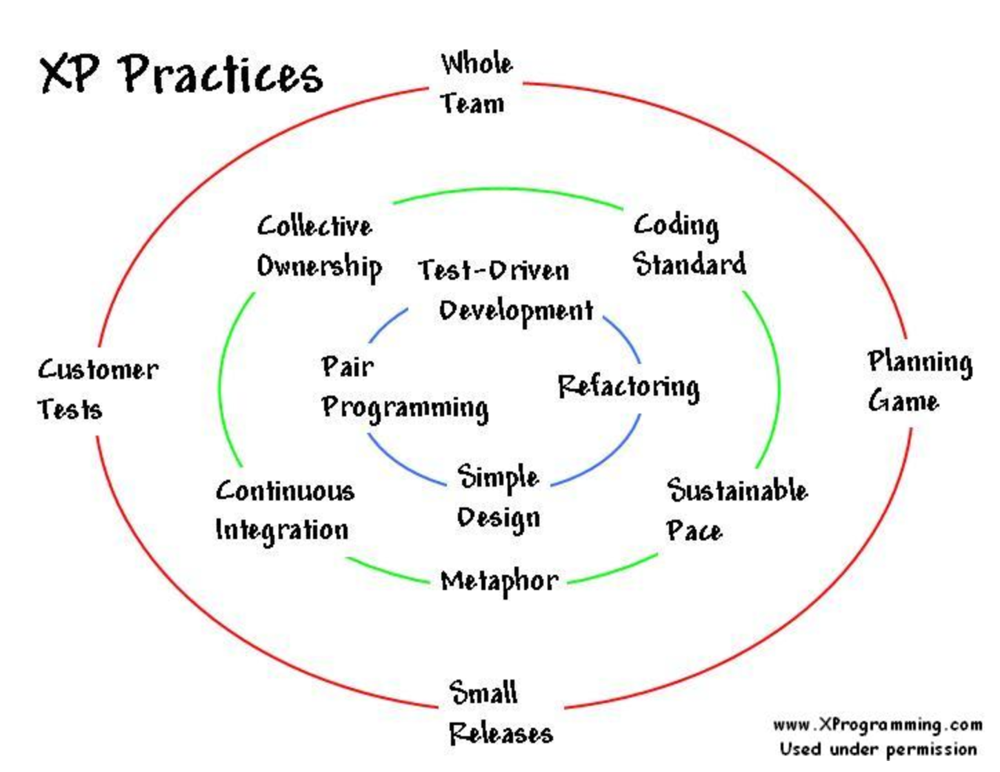
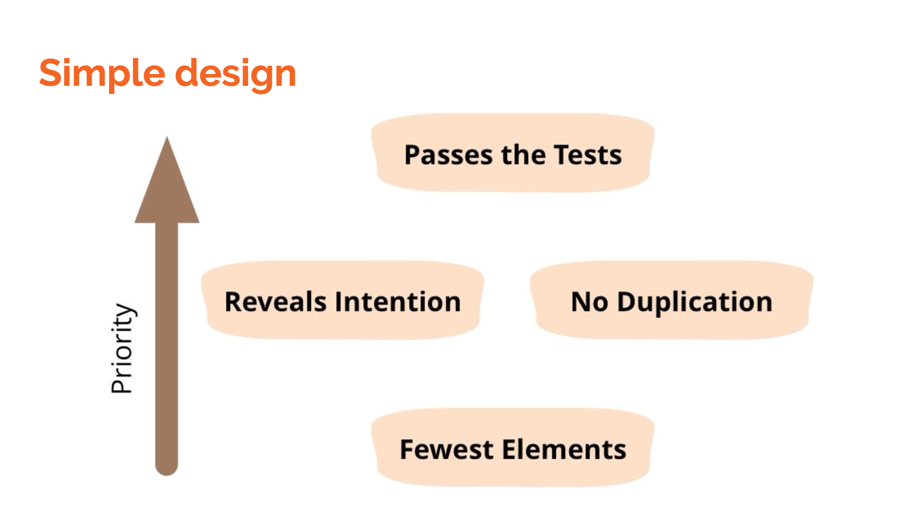
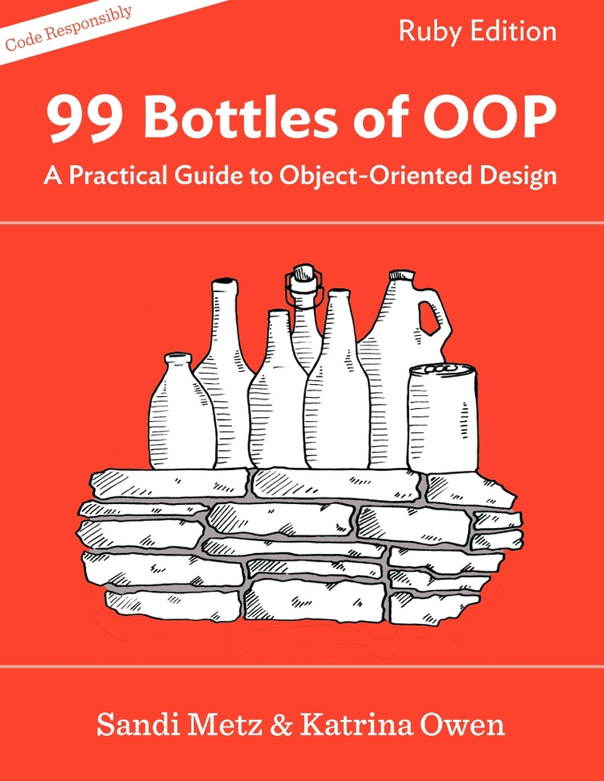

Yesterday I attended the Barcelona on Rails Meetup. The meetup itself was actually a Dojo and a presentation followed by a discussion around code quality.
The speaker was Daniel Carral and started the presentation by introducing Extreme Programming practices. He briefly discussed the day to day, moment to moment, work of the XP developers (the innermost section of the diagram).

These practices are mostly part of my daily work and the bit I found most interesting was the discussion on simple design through this diagram:

As depicted in the diagram the last priority when developing should be that the tests pass (as this is a taken for granted as otherwise the Continuous Integration system would point it out and the code would not be merged).
However, when working on other team’s codebase I think that due to the lack of knowledge of the codebase, specially for old codebases with lots of technical debt, sometimes we put initially the most emphasis on passing the test and later, on revealing intention and doing so through the fewest elements.
I had not seen this diagram before but find it as a useful reminder of what should be our aim when developing software.
View tweet 965561247390490624 on Twitter
Next, we started with the 99 bottles of beer code Kata based on Sandi Metz’s book of the same name.

I bought Sandi’s book before Christmas this year, after watching during lunch at work one of her talks but it’s still unopened. It’s actually this Kata what triggered my interest to attend the meetup. During the Kata we went through the first Chapter of the book
In order to frame the discussion over the quality of the different solutions exposed, Daniel showed us some metrics used in the industry throughout time to measure code quality: from Lines of Code in the 60s to the well-known Cyclomatic complexity, ABC (Assignmets, Branches and Conditions) and even the squint test.
We also discussed a bit over the SOLID principles and the part that easy testing plays on assuring the quality of the code.
After presenting different groups of people their solution, Daniel showed us 4 extra solutions to be discussed by the attendees.
The discussion itself proved useful and my take-out point was once again the KISS principle: Keep It Simple Stupid.
He also showed the quality assigned to each of the 4 solutions he presented by a Ruby tool called flog.
Conclusion
I enjoyed the meeting and the ensued discussion as it was not Ruby-centric but rather about best practices on software development.
Finally, after the meetup I am again looking forward to take up Sandi’s book.
Resources
Daniel’s presentation can be found here.
The initial tests suites used for the code Kata are found here